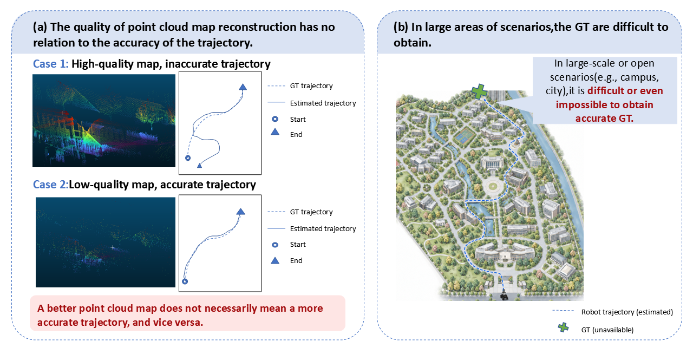
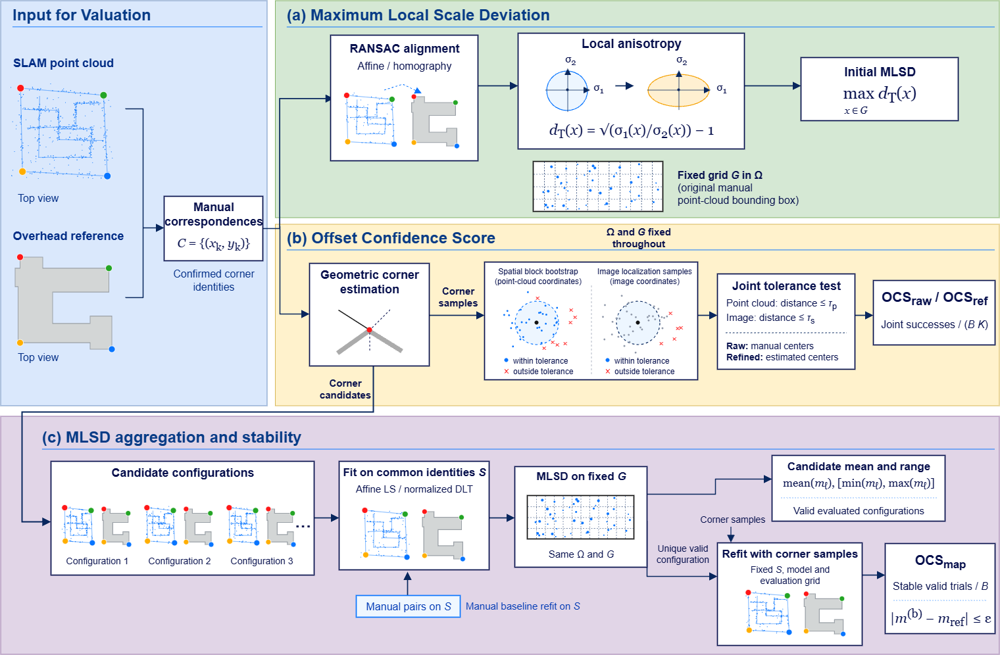
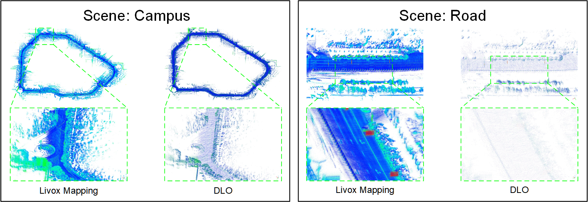
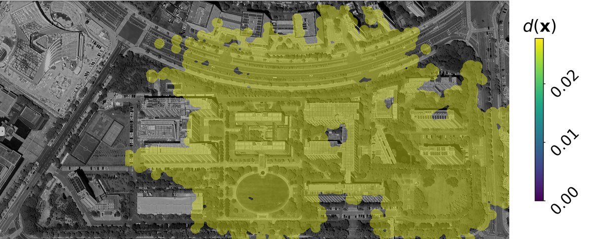
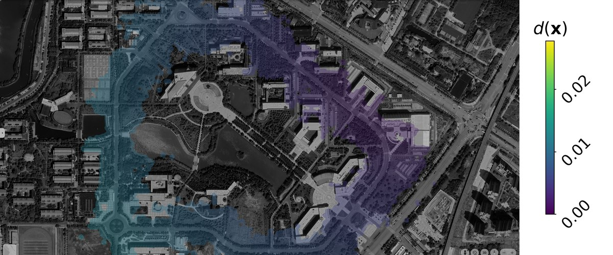
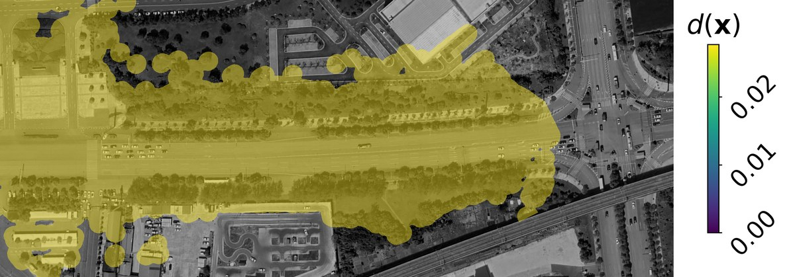
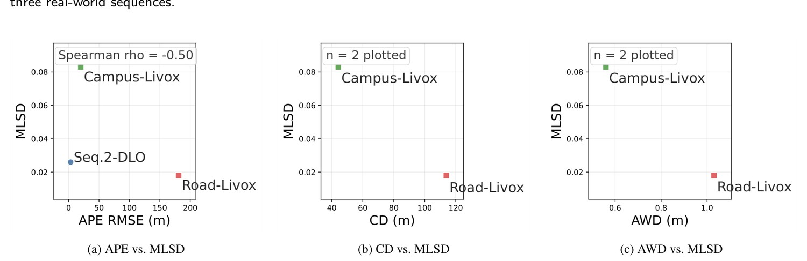

Satellite-Guided Assessment of Structural Distortion in SLAM Point Cloud Maps

Figure 1. The existing problems in SLAM evaluation: (a) map quality is unrelated to trajectory accuracy (Case 1 vs. Case 2); (b) accurate ground truth is difficult or impossible to obtain in large-scale or open scenarios.
Method

Figure 2. The MLSD evaluation pipeline: BEV projection, satellite-guided alignment, and local scale deviation computation.
Dataset

Figure 3. Data acquisition: hand-held Livox HAP mounted on an e-bike, covering the Campus and Road sequences.

Figure 4. Local maps preserve fine structure, while global maps accumulate scale inconsistency and structural drift.
Results
Backpack2025 Seq.2
Campus
Road
Overlay
Overlay
Overlay



Distortion field
Distortion field
Distortion field
Figure 5. Alignment overlays (top) and local distortion fields d(x) (bottom) for the three sequences. Warmer colors indicate larger local deviation from the similarity transform.

Figure 6. MLSD vs. conventional metrics: (a) APE, (b) CD, (c) AWD. No simple monotonic relation indicates complementary structural information.
Quantitative Results
| Sequence | SLAM method | APE ↓ | RPE ↓ | CD ↓ | AWD ↓ | SCS ↓ | MLSD ↓ |
|---|---|---|---|---|---|---|---|
| Seq.2 | DLO | 3.20 | 0.05 | – | – | – | 0.026 |
| Livox Mapping | – | – | – | – | – | – | |
| Campus | DLO | – | – | – | – | – | 0.014 |
| Livox Mapping | 19.94 | 0.14 | 44.18 | 0.56 | 0.47 | 0.083 | |
| Road | DLO | – | – | – | – | – | 0.028 |
| Livox Mapping | 180.91 | 0.37 | 113.92 | 1.03 | 0.45 | 0.018 |
Table 1. Quantitative comparison on the three sequences. On Road, Livox Mapping yields a large APE (180.91 m) yet a low MLSD (0.018), while on Campus the opposite holds — MLSD measures local structural distortion rather than global pose error, complementing conventional metrics. Dashes: not applicable or no usable map.
| Sequence | No. of trials | Mean MLSD | Std | CV (%) |
|---|---|---|---|---|
| Backpack2025 Seq.2 | 30 | 0.02654 | 0.00185 | 6.97 |
| Campus | 30 | 0.01279 | 0.00104 | 8.16 |
| Road | 30 | 0.02843 | 0.00239 | 8.40 |
Table 2. Repeatability of MLSD across 30 repeated correspondence annotations per sequence (CV < 9% on all sequences).